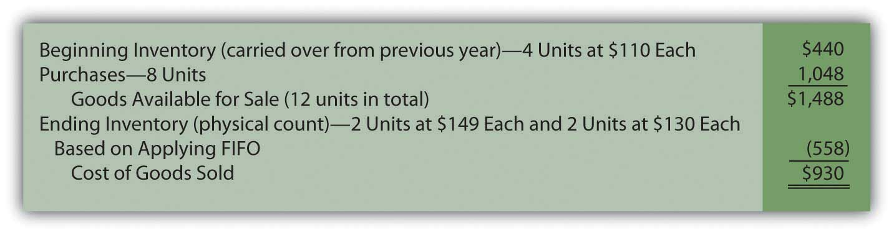
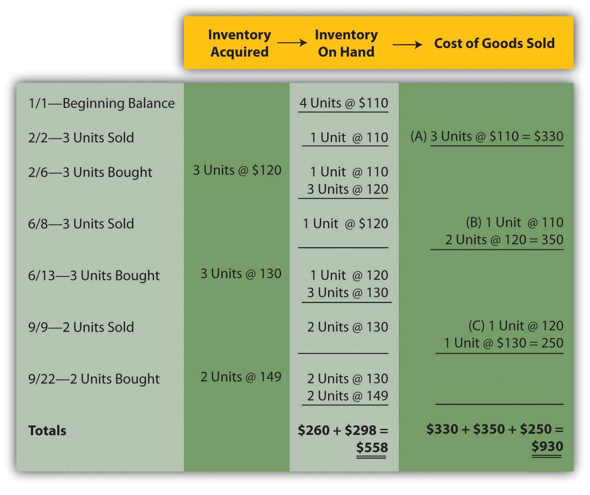

At the end of this section, students should be able to meet the following objectives:
Question: In the previous chapter, periodic and perpetual inventory systems were introduced. FIFO, LIFO, and averaging have now been presented. How does all of this material come together for reporting purposes? How does the application of a cost flow assumption impact the operation of a periodic or a perpetual inventory system?
Answer: Each company that holds inventory must develop a mechanism to both (a) monitor the balances and (b) allow for the creation of financial statements. If a periodic system is used, officials simply wait until financial statements are to be produced before taking a physical count. Then, a formula (beginning inventory plus all purchase costs less ending inventory) is applied to derive cost of goods sold.
In contrast, a perpetual system maintains an ongoing record of the goods that remain on hand and those that have been sold. As noted, both of these systems have advantages and disadvantages.
Companies also select a cost flow assumption to specify the cost that is transferred from inventory to cost of goods sold (and, hence, the cost that remains in the inventory T-account). For a periodic system, the cost flow assumption is only applied when the physical inventory count is taken and the cost of the ending inventory is determined. In a perpetual system, each time a sale is made the cost flow assumption identifies the cost to be reclassified to cost of goods sold. That can occur thousands of times each day.
Therefore, companies normally choose one of six systems to monitor their merchandise balances and determine the cost assignment between ending inventory and cost of goods sold:
Question: To illustrate, assume that the Mayberry Home Improvement Store starts the new year with four bathtubs (Model WET-5) in its inventory, costing $110 each ($440 in total) when bought on December 9 of the previous period. The following events then take place during the current year.
At the end of the year, on December 31, a physical inventory is taken that finds that four bathtubs, Model WET-5, are in stock (4 – 3 + 3 – 3 + 3 – 2 + 2). None were stolen, lost, or damaged during the period.
How does a periodic FIFO system differ from a perpetual FIFO system in maintaining accounting records and reporting inventory totals?
Answer: Regardless of the inventory system in use, several pieces of information are established in this example. These data are factual, not impacted by accounting.
Data—Purchase and Sale of WET-5 Bathtubs
Periodic FIFO. In a periodic system, the cost of the new purchases is the focus of the record keeping. At the end of the period, the accountant must count and then determine the cost of the items held in ending inventory. When using FIFO, the first costs are transferred to cost of goods sold so the cost of the last four bathtubs remain in the inventory T-account. That is the FIFO assumption. The first costs are now in cost of goods sold while the most recent costs remain in the asset account.
In this illustration, the last four costs (starting at the end of the period and moving forward) are two units at $149 each and two units at $130 each for a total of $558. Only after that cost is assigned to ending inventory can cost of goods sold be calculated.
Figure 9.6 Periodic FIFO—Bathtub Model WET-5
The last costs for the period remain in ending inventory; the first costs have all been transferred to cost of goods sold. This handling reflects the application of the first-in, first-out cost flow assumption.
Based on the application of FIFO, Mayberry reports gross profit from the sale of bathtubs during this year of $1,020 (revenue of $1,950 minus cost of goods sold of $930).
Perpetual FIFO. Perpetual accounting systems are constructed so that costs can be moved from inventory to cost of goods sold at the time of each new sale. With modern computer processing, that is a relatively simple task. Below is one format that provides the information needed for this home improvement store and its inventory of bathtubs. At points A, B, and C, costs are moved from inventory on hand to cost of goods sold based on FIFO. The cost of the first goods in the “inventory on hand” is reclassified to cost of goods sold at each of those three spots.
Figure 9.7 Perpetual FIFO—Bathtub Model WET-5
On this perpetual inventory spreadsheet, the final cell in the “inventory on hand” column ($558 or two units @ $130 and two units at $149) provides the cost of the ending inventory. Summation of the “cost of goods sold” column reflects that expense for the period ($930 or $330 + $350 + $250).
One important characteristic of FIFO should be noted here. Under both periodic and perpetual FIFO, ending inventory is $558 and cost of goods sold is $930. The reported numbers are identical. The first cost for the period is always the first cost regardless of when the assignment to expense is made. Thus, the resulting amounts will be the same using either FIFO system. For that reason, many companies that apply FIFO maintain perpetual records to track the units on hand throughout the period but ignore the costs. Then, when financial statements are prepared, they use a periodic computation to determine the cost of ending inventory in order to compute cost of goods sold. That allows the company to monitor its inventory quantities daily without the expense and effort of identifying the cost associated with each new sale.
Link to multiple-choice question for practice purposes: http://www.quia.com/quiz/2092904.html
Companies that sell inventory choose a cost flow assumption such as FIFO, LIFO, or averaging. In addition, a method must be applied to monitor inventory balances (either periodic or perpetual). Six combinations of inventory systems can result from these two decisions. With any periodic system, the cost flow assumption is only used to determine the cost of ending inventory so that cost of goods sold can be calculated. For perpetual, the reclassification of costs is performed each time that a sale is made based on the cost flow assumption that was selected. Periodic FIFO and perpetual FIFO systems arrive at the same reported balances because the earliest cost is always the first to be transferred regardless of the method being applied.